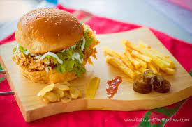

ZINGER CHEESE BURGER
RECIPE
INGREDIENTS
- Chiken
- Egg
- Cornflex
- Garlic Paste
- Soya Sauce
- Mustard Powder
- Chinese Salt
- Black Pepper
- Red Pepper Flakes
- Salt to Taste
- Oil For Frying
- Mayonnasie
- Tomato Ketcup
- Few Saled Leaves
- Cheese
- Tomato Sliced
- Cucumber Sliced
- Burger Bun

COOKING METHODS
- Put chiken in a large bowl .
- Add musterd paste,garlic paste, chinese salt,
soya sauce, black pepper, saltand chili flakes .
- Mix until will combined .
- Shape mixture into plat patties .
- Dip patties into egg coated with corn flakes .
- Shallow fry until crispy and golden brown .
- Toast buns on a hot pan .
- spread mayonnaise on burger buns .
- Layer cucumber, tomato sliced,and saled leaves,on each burger .
- Top with chiken patties .
- Drizzle with tomato ketcup .
- And last a zinger burger serve to fries and tomato ketcup .
